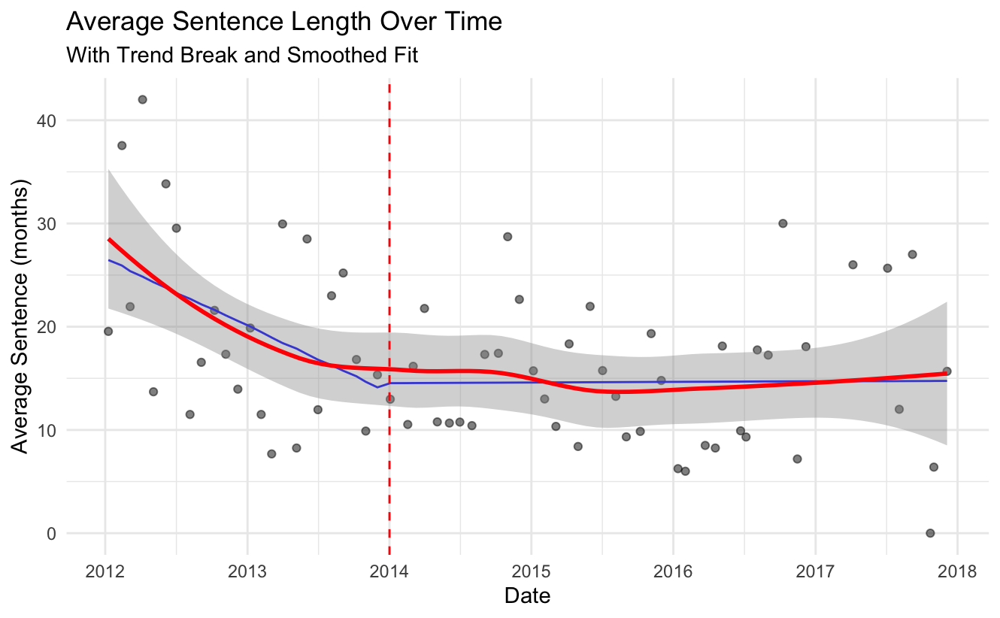
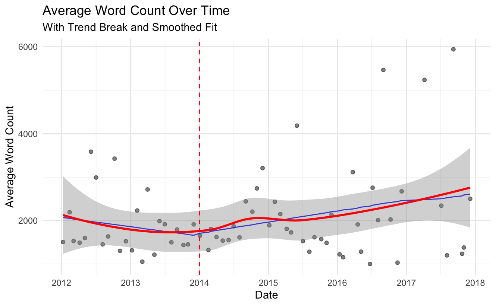
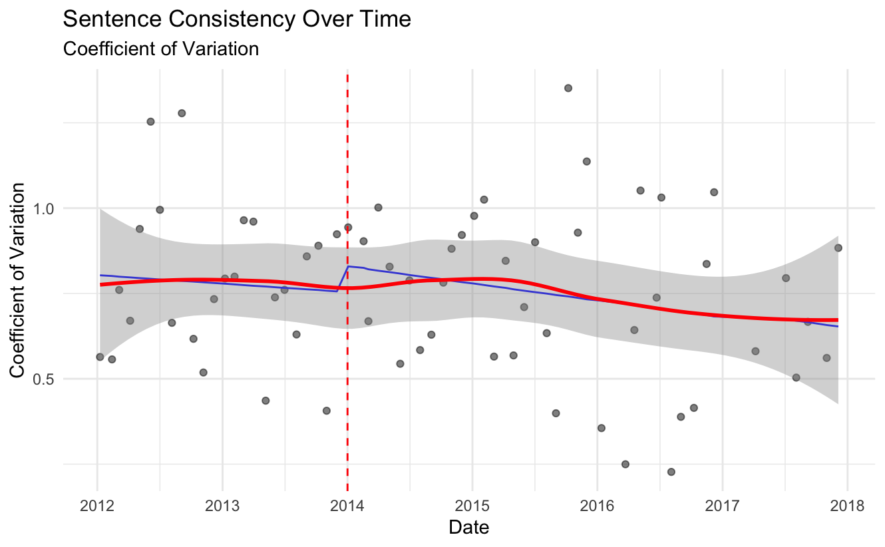
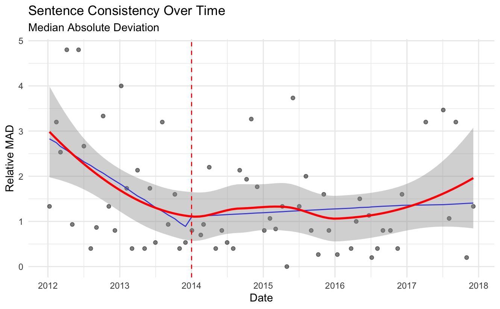
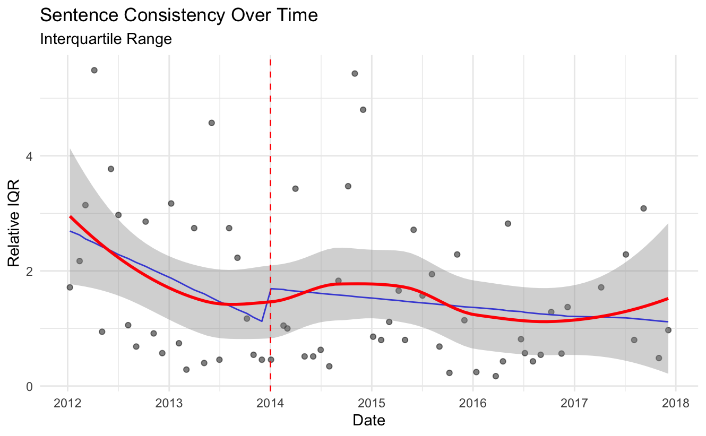

Abstract
Crime and punishment remain central concerns in China’s justice system, yet little is known about how transparency reforms shape judicial decision-making at the local court level. This study examines public scrutiny effects in criminal sentencing in one basic-level court through the lens of focal concerns theory. Drawing on a novel complete dataset of judgments rendered from 2012-2017 and interviews with eight judges from diverse courts, the analysis reveals that transparency requirements trigger multiple adaptive responses in how judges assess focal concerns. Post-reform judgments are generally longer, particularly in cases involving serious crimes, suggesting more thorough articulation of assessments. Results show a reduction in sentence length after controlling for case characteristics, suggesting transparency moderates how judges balance punitive concerns against proportionality and defensibility. While initial implementation of the reform improved sentencing consistency, standardization effects diminished over time, revealing the institutional challenges of sustaining transparency-driven changes. The qualitative findings highlight variations in reform responses, with judges in first-tier cities and those with stronger professional backgrounds reporting less dramatic changes than colleagues from other backgrounds. These findings advance understanding of how visibility mechanisms influence judicial decision-making and offer insights for policy reforms aimed at channeling discretion through transparency measures.
Keywords: criminal sentencing, transparency reform, judicial behavior, authoritarian justice, Chinese courts
1. Introduction
“It is not merely of some importance but is of fundamental importance, that justice should not only be done, but should manifestly and undoubtedly be seen to be done.”1 The idea of open justice is not only a fundamental principle of judicial administration across diverse governance systems worldwide. Transparency initiatives have gained momentum globally as courts recognize that visible justice enhances institutional legitimacy and public confidence (Hollyer et al., 2019).
To achieve open justice, it is essential to make judgments open and accessible (Ministry of Justice & HM Courts & Tribunals Service, 2021) In terms of making court decisions accessible online, China has implemented one of the world’s most comprehensive judgment publication systems, pioneering digital accessibility at a scale uncommon even among established civil law systems (Liebman et al. 2017). The Chinese judiciary had been experiencing a crisis of public confidence, caused by policies that prioritized mediation over formal law and judicial proceedings (X. He, 2007; Minzner, 2011). Thus, the restoration of public confidence and authority in the Chinese legal and governance system becomes one of the government’s main goals (Biddulph et al., 2017). In 2013, Zhou Qiang, the then newly appointed president of the Supreme People’s Court (hereinafter referred to as “the SPC”), introduced judicial reforms in a number of different areas, including the transparency initiative for the mass publication of judicial decisions. From January 1st, 2014, all courts in China are required to upload their judicial decisions to a centralized website, ‘China Judgments Online’ (http://wenshu.court.gov.cn/). Over one hundred million cases have been posted online since then. Before 2014, most decided cases were not accessible to the public (Liu 1991; Chen and Li 2020). They “were of the ‘for-your-eyes-only’ sort, never intended for readers even outside of the authoring institution (Diamant 2000: 527).”
Research performed earlier on the judgments online reform emphasized the evaluation of the practice (Yang, Qin, and He 2019; Ma, Yu, and He 2016), the missingness issue (Liebman et al. 2017), and the principal-agent problem identified herein (Liu et al. 2022; Wang 2021). Furthermore, researchers observed that the reform improved public confidence (Chen and Li 2020) and the centrality of local courts (Chen, Liu, and Tang 2021), but adversely affected the private firms whose judgments were disclosed (Liu et al. 2022). To the author’s knowledge, however, limited research has examined patterns in judicial behavior during this reform period, and this gap is partly due to the challenges of accessing pre-reform data.
This paper analyzes intentional injury judgments at a basic court before and after the 2014 reform, documenting changes in judicial practice during this transition period. I employ focal concerns theory (Steffensmeier, Ulmer, & Kramer, 1998), arguably the most influential conceptual framework to explain sentencing decisions (Wang 2025), as my analytical framework. This approach is particularly valuable because it integrates well with psychological mechanisms that influence judicial behavior under public scrutiny. Research demonstrates that public access to judicial decisions systematically influences judges through psychological processes such as audience effects, self-presentation concerns, and risk aversion (Badas & Justus, 2022; Lim et al., 2015; Black et al., 2016).
Focal concerns theory posits that judicial sentencing decisions are guided by three primary considerations: assessment of offender blameworthiness, protection of the community, and practical constraints within institutional settings. The psychological literature on judicial decision-making suggests that transparency alters how judges process and articulate these concerns. When judges anticipate wider audiences, they engage in more deliberate reasoning, increase justification complexity, and adjust their decision-making to manage perceptions of legitimacy (Badas & Justus, 2022; Cohen et al., 2015; Philippe & Ouss, 2018; Lim et al., 2015; Kromphardt & Bolton, 2022; Boston, 2020; Black et al., 2016). In China’s judicial system, these psychological mechanisms interact with existing institutional pressures but operate through universal cognitive processes observed across different legal systems.
The theory’s flexibility allows me to examine how transparency requirements affect judicial decision-making across multiple dimensions: the articulation of concerns in written judgments, consistency in sentencing across similar cases, and severity of punishment decisions. While focal concerns theory originated in Western judicial systems, its core insights regarding how judges balance multiple considerations can be applied across diverse institutional settings (Wang 2025; Volkov 2016).
To triangulate my findings, I complement statistical analysis with in-depth interviews with eight judges representing diverse institutional contexts, including judges from the sample court, intermediate courts, and a higher court. These interviews provide valuable perspective on how transparency requirements reshape judicial behavior through psychological mechanisms and institutional adaptations.
Based on linear regression models and qualitative findings, the analysis suggests: post-reform judgments tend to be more detailed, reflecting more thorough articulation of focal concerns; sentences are generally lighter during this period, indicating a potential rebalancing of competing considerations; and sentencing shows greater consistency, suggesting standardization in how judges apply focal concerns across similar cases under conditions of increased visibility. The qualitative data further reveals that many judges adopt a deliberate process of checking similar cases before finalizing sentencing decisions, often adjusting their preliminary determinations when they differ significantly from established patterns. Additionally, judges describe an evolution from initial enthusiasm for case searching to more selective application over time, which aligns with the statistical finding of initially improved consistency that later moderated.
This study offers two primary contributions to the literature. Methodologically, it utilizes a complete dataset hand-coded from court archives, helping address potential selection bias concerns that could arise from relying solely on public judgment databases. Prior research has shown these public databases have significant gaps, potentially from non-random exclusion of sensitive cases (e.g., death penalty cases), which poses challenges for empirical analysis (Liebman et al. 2017; Liu et al. 2022). Moreover, this sample includes the pivotal pre-reform period before 2014. Very few studies have access to case data from before the publication requirements took effect, making comprehensive analysis of reform-era changes challenging.
Furthermore, it contributes to the literature on authoritarian transparency by examining how visibility requirements reshape the application of focal concerns in judicial decision-making. This approach may offer insights relevant to other jurisdictions implementing similar reforms. For example, Vietnam, a state governed by the Communist Party and where political and legal reforms are frequently influenced by Chinese practices, has implemented comparable measures. On July 1st, 2017, all Vietnamese courts were required to make their judgments available online, through a website managed by the Vietnamese Supreme People’s Court (Nguyen 2019).
Admittedly, the focused approach limits broad generalizability across China’s diverse judicial landscape, yet it offers several methodological advantages. It eliminates cross-court institutional variation that might confound analysis of the transparency reform’s effects; the court was not among pilot courts that voluntarily disclosed judgments before 2014, making it an ideal setting to examine the effects of mandatory publication; access to the court’s complete archives provides a rare opportunity to analyze pre-reform judgments that are typically unavailable to researchers. Therefore, the in-depth case study offers valuable insights into how transparency requirements may reshape judicial behavior at the local court level, while I also acknowledge that patterns may vary across China’s different judicial contexts.
The remainder of the paper is organized in the following manner. Section 2 introduces the background of judicial transparency reform. Section 3 presents focal concerns theory and develops hypotheses about how transparency affects judicial decision-making. The data, methodology and descriptive results are in Section 4. Section 5 presents the regression results, and the paper then concludes with a discussion of those findings.
2 Background
2.1 The Chinese courts and judicial legitimacy
In modern states with diverse governance systems, many institutional adapatations have emerged, including reformed legislatures (Gandhi, 2004; Malesky & Schuler, 2010) and courts (Ginsburg and Moustafa 2008; Wang 2015). Parallel to this development, several countries have adopted aspects of open government, contributing to scholarly discussions of “authoritarian transparency” in governance. Scholars have proposed various interpretations of this pattern. Some suggest that public scrutiny may assist governments in monitoring officials (Stromseth et al., 2017), while others point to transparency’s potential role in addressing challenges within ruling coalitions (Hollyer et al., 2019).
In China’s context, scholars have identified public trust as another factor potentially associated with transparency initiatives. Research on “consultative authoritarianism” suggests that public opinion plays a notable role in governance (He and Thøgersen 2010; He and Warren 2011). Some scholars associate China’s institutional stability amid rapid social and economic change with these consultative practices. During a period when litigation was often superseded by social harmony considerations, concerns arose about intervention in cases by powerful enterprises and government departments through various means (Biddulph et al., 2017). Studies documented instances of citizens traveling to provincial capitals and Beijing to lodge protests over land, labor, or environmental disputes rather than pursuing local court resolution (Chen 2012). Research also noted complaints about local courts’ handling of administrative suits (He 2007). Additionally, scholars have discussed how judicial corruption at the local level has been associated with declining judge credibility (Fu, 2016). These circumstances coincided with the 2012 central leadership’s introduction of judicial reforms, including enhanced transparency through more accessible judgments.
Fan and Lee (2019) characterize efforts toward judicial transparency as “responsive authoritarianism.” Their interpretation suggests this approach may reflect attempts to balance responsiveness to public opinion with institutional control. From this perspective, judicial transparency could serve as one element in maintaining regime legitimacy while potentially facilitating central oversight of courts.
Research suggests courts may have institutional interests in building legitimacy through various means. Studies note that sociological, moral, and legal legitimacy appear relevant for courts across different political systems (Nguyen, 2019). However, scholars observe that judges in authoritarian contexts often operate without certain institutional protections common in democratic systems, such as life tenure, while maintaining dependencies on government for operational resources (Nguyen 2019). Making public the court’s judgments is an important strategy for increasing external support, and thereby raising the cost of the regime trying to undermine it (Epstein & Knight, 2018). According to Staton, “communication strategies are broadly designed to advance the transparency of the conflicts constitutional courts resolve and to promote a deep societal belief in the judicial legitimacy, conditions that promote judicial power (Staton 2010: 7).” In this regard, China Judgments Online was seen as a big victory by reformers on the inside, as it has the potential to enhance public trust, combat corruption, and assist courts in resisting external pressure (Liebman et al. 2017). The platform’s multiple potential functions align with various institutional interests, as central leadership generally advocates for impartial adjudication and appropriate use of judicial powers.
2.2 The judgments online reform: context and implementation
Before 2012, Chinese court judgments were primarily available only to direct litigation participants. Access to court opinions typically required personal connections (Liebman et al. 2017). The 2012 Civil Procedure Law amendment introduced Article 156, establishing public access rights to legally effective judgments and rulings, with exceptions for state secrets, commercial secrets, and personal privacy. However, research indicates that practical accessibility remained limited for many people before the 2014 online publication initiative (Liebman et al. 2017; Chen and Li 2020).
The courts’ journey toward public accessibility of judgments spans several decades, reflecting an evolution in how the judiciary approached transparency and the psychological environment within which judges operated. The SPC began publishing selected cases in an official gazette in 1985 (Liu 1991). While published cases do not constitute formal precedents, they provide guidance on legal issue resolution. In 2000, the SPC issued Administrative Measures for the Publication of Judgment Documents by the SPC (Zuigao Renmin Fayuan Caipan Wenshu Gongbu Guanli Banfa, hereinafter referred to as “the Administrative Measures”), which addressed only the publication requirements for its own judgment documents, but this opinion is not binding on other lower courts. It specified that its daily judgment documents could be published at any time on the People’s Court Newspaper website and the government website that the court opened.
Notably, these measures stated that “in the event of violation of these measures by unauthorized publication (shanzi gongbu) to the outside and causing extremely negative effects, the liable person(s) shall be investigated in accordance with relevant provisions (emphasis added).” Such language reveals the psychological dimension of judgment publication—suggesting significant concern about potential consequences of broad visibility that would later become standard practice.
This cautious approach persisted prior to the implementation of the judgment online reform in late 2013. The SPC, in its 2009 Opinions on Facilitating Access to Judicial Services (Guanyu Jinyibu Jiaqiang Sifa Bianmin Gongzuo de Ruogan Yijian), recommended that the people’s courts gradually implement a public inquiry system for adjudication documents and litigation files. However, rather than as a requirement, the people’s courts may make case judgments and information about enforcement available to the public via the Internet. Similarly, the 2010 Provisions on the Publication of Judicial Documents on the Internet by People’s Courts (Guanyu Renmin Fayuan zai Hulianwang Gongbu Caipan Wenshu de Guiding) stipulated that judicial documents may be published via the Internet, except in specified circumstances. Online publication is required only for those judgments rendered by the SPC and higher people’s courts that provide guidance to the application of law.
By 2013, the approach to publication changed significantly —creating what judicial psychology research would identify as a fundamental shift in judges’ decision-making environment. The 2013 Provisions on the Publication of Judicial Documents on the Internet by People’s Courts (Guanyu Renmin Fayuan zai Hulianwang Gongbu Caipan Wenshu de Guiding）mandated Internet publication of all effective judicial documents, with specific exceptions including state secrets, personal privacy, juvenile criminal cases, mediated settlements, and cases deemed unsuitable for online publication. The January 1st, 2014 implementation marked a major shift toward digital publication of judgments. As expressed by SPC president Zhou Qiang:
people’s courts at all levels shall constantly update their concepts on judicial transparency and take it as granted to make disclosure, with exceptions only in a very few cases; and shall make efforts in changing the passive disclosure into active disclosure, internal disclosure to external disclosure, optional disclosure to full disclosure and disclosure in disguised form to substantial disclosure (Supreme People’s Court 2015: 30).
During the decade of transparency developments, some local courts implemented voluntary disclosure programs before mandatory requirements (Yang and Chen 2014). These local initiatives provided practical experience in judgment disclosure practices, though their scope remained limited in both participating courts and case coverage.
This historical progression provided a great opportunity to study how judges respond psychologically to transparency requirements. The abrupt shift from a system where judgments were largely private communications to one where decisions would be accessible to multiple audiences potentially altered how judges approached their core decision-making tasks,including their assessment and articulation of the blameworthiness, community protection, and practical constraints that form the central concerns of the theoretical framework employed in this study.
3. Theoretical Framework and Hypotheses
While China’s judicial transparency reform has been widely studied for its effects on public confidence and external accountability, less attention has been paid to how publication requirements may influence judicial decision-making processes. This study employs focal concerns theory to analyze changes in judicial behavior following transparency reforms in authoritarian legal contexts.
While developed in democratic contexts, focal concerns theory provides a valuable analytical framework for understanding judicial decision-making in China’s legal system. China’s criminal justice system has traditionally emphasized substantive justice over procedural formalism, with judges weighing blameworthiness heavily through ideological and moral lenses (Peng & Cheng, 2022). Community protection concerns often manifest through emphasis on social stability maintenance, while practical constraints include both institutional limitations and political considerations specific to China’s party-state structure.
The 2000 SPC Administrative Measures provided early insight into institutional perspectives on judgment publication, noting that judgments whose reasoning could not be adequately substantiated were unsuitable for publication. This recognition of judgment quality as a prerequisite for transparency is particularly meaningful given the background of many judges as former military officials turned civil servants (junzhuan ganbu) with varying levels of legal training. The reform thus creates a great opportunity for examining how increased visibility affects how judges engage with and articulate focal concerns in their decision-making processes.
Transparency fundamentally transforms the decisional environment in which judges apply focal concerns. When judgments remained private communications between courts and litigants, judges could rely on abbreviated reasoning and implicit understandings of blameworthiness, danger, and institutional constraints. Publication exposes these previously private determinations to multiple audiences—superior courts, legal professionals, academic observers, and increasingly, the general public—each with potentially different expectations about how focal concerns should be weighted and articulated.
3.1 Formalism and legal reasoning
A primary element of focal concerns theory addresses how judges assess and communicate these concerns. In Western contexts, judges typically elaborate them through detailed legal reasoning in written judgments, while historically Chinese court judgments have devoted minimal space to such reasoning—contributing only 23% of judgment content compared to 68% in American counterparts (Cheng et al., 2008). This stark contrast reflects different assumptions about the purpose of written judgments and the role of formal reasoning in legitimizing judicial decisions. As Wang (2019) noted, this brevity stems from multiple factors, including error avoidance and the primacy of decisions over reasoning when judgments primarily serve immediate parties.
According to Judge Hu Yunteng of the SPC: “In comparison with the reasoning in the judgment document, reasoning in the adjudication process has richer and more profound value implications... It is ineffective and inefficient if a judge does not articulate what he should say and what he can say in terms of reasoning in court, and only expresses his reasoning in writing” (Wang 2019: 84). This perspective captures a traditional preference for direct communication over written exposition in China’s legal culture, where judges historically viewed themselves more as problem-solvers than formal legal analysts.
However, mass publication fundamentally alters potential audiences and their expectations regarding how blameworthiness assessments should be articulated. Beyond immediate parties, public readers may ask: “Why and how did courts reach their conclusions? Was that the right decision?” (Han et al., 2018). These questions demand more explicit connection between facts, law, and blameworthiness determinations than previously required in non-public judgments.
When judgments remained unpublished, they typically avoided widespread scrutiny. The formulaic legal style of such decisions often made them appear routine rather than controversial. With publication, judges’ qualifications, values, and literacy potentially become subjects of public discussion or even calls for discipline (Sun 2014). This visibility likely creates pressure for judges to more explicitly demonstrate their assessment of concerns through formal legal reasoning.
As one judge acknowledged: “The uptake of law transparency movement does require me to reveal more details of courtroom trials. My colleagues and I start to provide more factual narratives in opinions, and some of the narratives may read much like entertaining stories” (Han, Bhatia, and Ge 2018: 476). Judges consciously adapt their articulation in response to expanded readership, which corresponds with more detailed documentation (Ginsburg, 2010).
Therefore, I propose that transparency creates meaningful pressure for judges to demonstrate more thoroughly how they assess the focal concerns:
H1: Following implementation of transparency requirements, criminal court judgments will demonstrate increased formalism and legal reasoning as judges respond to expectations for more thorough articulation of focal concerns.
3.2 Punishment severity
The relationship between transparency and how judges consider the three focal concerns in determining sentence severity remains theoretically complex and potentially contradictory.
From one perspective, transparency might intensify judges’ attention to community protection concerns if they perceive public demand for punitive responses to maintain social stability. Judges might hesitate to follow trends toward reduced punishments to avoid appearing unusual or lenient (Zhao & Jin, 2012), particularly if they believe severe sentences better demonstrate their commitment to addressing public safety concerns. This dynamic could be especially pronounced in high-profile or sensitive cases where public sentiment favors harsher punishment.
Conversely, transparency might moderate sentencing severity through multiple mechanisms related to focal concerns. Publication of judgments may expose disproportionate sentencing across similar cases, encouraging more measured approaches to maintain legitimacy. When extreme sentences become visible, they potentially attract more scrutiny and criticism, creating professional risks for judges who deviate significantly from typical patterns without compelling justification.
Additionally, as lawyers and defendants gain access to public judgments, they develop more effective challenges to extreme characterizations of culpability and dangerousness. Shared judgments contribute to a knowledge base benefiting the entire legal community (Ramos Maqueda & Chen, 2021), potentially equalizing information asymmetries that historically disadvantaged defendants. As one interviewee noted: “Openness is a very good mode of passing down knowledge. We must know the law, obey the law, and learn the law. Only then can the law protect us” (Chen and Li 2020: 52).
When sentencing practices become more visible across jurisdictions, extreme variations become more difficult to justify, potentially encouraging convergence toward more moderate sentencing patterns. From prior research conducted by the author, many crimes show right-skewed sentence distributions, and greater consistency might reduce skewness, potentially corresponding with lower average sentences.
It is important to note that China’s criminal justice system has undergone significant evolution over recent decades. While the system was characterized by “swiftness and severity” (yanda) campaigns beginning in 1983 that emphasized harsh punishment and speedy case processing (Trevaskes, 2007) a notable shift occurred in the early 2000s. The introduction of the “combining leniency with severity” (kuanyan xiangji) policy marked a move toward a more balanced approach to criminal punishment (Li, 2015; Trevaskes, 2010). This policy maintains severity for serious crimes while introducing greater leniency for minor offenders. Within this evolving penal landscape, transparency requirements may elevate considerations related to fairness, proportionality, and defensibility of decisions. This rebalancing may manifest in more moderate sentencing patterns:
H2: Following implementation of transparency requirements, criminal sentences will demonstrate reduced severity as enhanced legal discourse and scrutiny reshape how judges balance blameworthiness and community protection against proportionality and defensibility concerns.
3.3 Sentencing consistency
Focal concerns theory suggests judges’ determinations vary based on their individual assessments and even heuristics and stereotypes . When judges consider the concerns differently, even in factually similar cases, it produces sentencing disparities that may undermine fairness. This challenge is recognized across legal systems, including China’s, where the first public release of court judgments in the 1980s explicitly aimed to achieve uniformity (tongyi) in sentencing standards for significant and complex criminal cases (Liu 1991).
Commitment to consistency in sentencing has long been emphasized within China’s judiciary. This aligns with political interests in centralizing oversight and control over the courts (Stern et al., 2020), reflecting how practical constraints may operate distinctively in China’s political-legal context. While critics suggest that enforcing consistent adjudication mechanically might constrain judicial discretion - “the essence of justice” (Feng & Hu, 2018), more standardized approaches to focal concerns can contribute to building a fair and impartial judicial system and enhance predictability (Feng & Hu, 2018; Qian, 2018).
Although Chinese cases lack formal precedential authority, research indicates “when available, prior cases will inevitably be used as authoritative precedents, official denials notwithstanding” (Liu, Klöhn, and Spamann 2021: 95). Judges reportedly spend more time reading prior cases than statutes, and often consult cases before referencing statutes, suggesting peer decisions significantly influence how judges understand and apply focal concerns in practice.
Digitization and mass publication enable judges to access and analyze similar cases more systematically than before. This expanded access potentially standardizes how judges assess the focal concerns by providing reference points for how peers have weighed these considerations in similar factual circumstances. The Supreme People’s Court’s 2020 Guiding Opinions on Unifying the Application of Laws to Strengthen the Retrieval of Similar Cases (Guanyu Tongyi Falv Shiyong Jiaqiang Leian Jiansuo de Zhidao Yijian (Shixing)) now formalizes this process by requiring judges to search for similar cases in major, difficult cases (Cao, 2021).
Even without formal similar case searches, reviewing one or two similar cases might influence a judge’s decision through what Stern et al. (2020) describe as an “anchoring effect,” where sentences in similar cases serve as numerical reference points for appropriate punishment. Given time constraints and potential reluctance to deviate from norms, such effects might be particularly notable among Chinese judges operating within hierarchical court structures that emphasize conformity with established practices.
The availability of published cases potentially reduces what focal concerns theory describes as “perceptual shorthand”—the use of stereotypes or heuristics to fill information gaps when assessing focal concerns (Kramer & Ulmer, 2002). With more comprehensive information about how similar cases have been handled, judges can rely less on such shortcuts and more on established patterns in similar cases, potentially reducing idiosyncratic variations in how focal concerns are applied. Therefore, the second hypothesis is:
H3: Transparency requirements will correspond with increased consistency in sentencing as access to similar cases creates reference points for how judges assess focal concerns across similar factual circumstances.
4. Data, Methodology, and Descriptive Results
4.1 Data and methodology
As part of my field study in China, I accessed the archive of full intentional injury judgments rendered at a basic court located in a well-developed city in Southern China. This comprehensive dataset includes 826 cases rendered between 2012 and 2017, spanning both pre-transparency (pre-2014) and post-transparency (post-2014) periods. This court was not among pilot courts that voluntarily disclosed judgments before 2014, making it an ideal setting to examine how mandatory publication requirements affect judicial articulation of the focal concerns.
This dataset is particularly valuable as it contains both published and non-disclosed judgments, thus avoiding selection bias from intentional missingness that might otherwise skew analysis. Certain case categories remained confidential throughout the study period, primarily juvenile cases (27 cases, 3.3%) and cases involving personal privacy decided in closed trials (3 cases, 0.4%). While these consistently exempt cases could theoretically serve as a control group for a Difference-in-Differences analysis, violations of the common trend assumption led to focusing on the remaining cases in the main analysis. Additionally, 15 adult cases (1.8%) were not disclosed for undetermined reasons but are included in the main analysis as compliance variations given their similar characteristics to disclosed cases.
For examining how transparency affects judges’ articulation of focal concerns (H1), I analyze judgment length using word counts as a proxy measure for formalism and reasoning elaboration, following Ginsburg (2010).
To assess how transparency affects judges’ balancing of the focal concerns (H2), I analyze sentencing severity using standardized punishment lengths. This approach accounts for different punishment types by converting acquittals to zero-month punishments and multiplying limited incarceration (juyi) months by 0.75 to align with fixed-term imprisonment (Hou & Truex, 2022).
To investigate how transparency standardizes the application of focal concerns across similar cases (H3), I employ three complementary monthly measures of variation in sentencing. The Coefficient of Variation (CV) is calculated as the standard deviation divided by the mean of sentences within each month, capturing relative dispersion. The Median Absolute Deviation (MAD) is calculated as the median of absolute deviations from the median sentence within each month, offering a measure less sensitive to outliers. The Interquartile Range (IQR) is calculated as the difference between the 75th and 25th percentiles of sentences within each month, providing insight into the spread of the middle 50% of sentences. Both MAD and IQR are normalized by their respective median values to facilitate comparison across time periods.
To address potential endogeneity from judge-specific characteristics, Models 6 include judge fixed effects. This approach controls for time-invariant judge characteristics such as educational background, professional experience, gender, and personal sentencing preferences. While our dataset does not contain detailed biographical information for each judge, the fixed effects approach effectively accounts for all stable judge-level factors that might influence sentencing decisions or judgment writing styles.
For regression analysis, I utilize the following specifications:
1) Judgment formalism and legal reasoning (individual case level)
\[Log({Wordcount}_{i}) = \alpha + \beta{Public}_{i} + \gamma{Control}_{i} + \varepsilon_{i}\]
2) Sentencing consistency (monthly level)** \[Log({Difference}_{i}) = \alpha + \beta{Public}_{i} + \gamma{Control}_{i} + \varepsilon_{i}\]
3) Punishment severity (individual case level)
\[Log({Month}_{i}) = \alpha + \beta{Public}_{i} + \gamma{Control}_{i} + \varepsilon_{i}\]
\({Public}_{i}\) is a dummy variable indicating whether the case was decided after January 1st, 2014, and \({Control}_{i}\) includes relevant case characteristics outlined by the sentencing guidelines. Notably, Renzui Renfa (pleading guilty for leniency scheme) was not implemented in this court until 2018, which falls outside our primary analysis period and therefore cannot account for the sentencing changes observed after the 2014 reform.
To complement the quantitative analysis and gain deeper insights into the mechanisms through which transparency affects judicial behavior, I conducted semi-structured interviews with eight judges with diverse professional backgrounds and institutional positions. Three judges were from the sample court (representing senior, mid-level, and junior positions), two were from local courts in the same province, one served in the sample court’s appeal court (intermediate court), one was from a higher court in central China, and one was from a first-tier city court. This diversity helps capture variations in judicial perspective across different institutional contexts.
Six judges had experience spanning the pre- and post-reform periods, while two began their judicial careers around the time of the reform (one in 2014 and one in 2017), providing both longitudinal and fresh perspectives. Table 1 presents the anonymized characteristics of the interviewed judges.
[Insert Table 1 here]
The interviews were conducted via telephone or wechat meetings, and typically lasted 30-90 minutes. The interview protocol included questions about pre-reform practices, implementation experiences, and post-reform changes in judical behaviors. To ensure candid responses, all interviews were conducted with confidentiality assurances.
4.2 Descriptive data
Since one case may have multiple defendants, I code one defendant as a separate observation. The data includes 792 observations that contain essential information. Variables with frequencies below 0.05 in the sample were excluded from the regression analysis to ensure reliable estimation.
[Insert Table 2 here]
Table 2 presents the descriptive results. Half of the defendants (52%) do not have an attorney and must defend themselves, with the majority being male (96.5%) and non-local residents (91.9%). Only 4.7% had completed college-level education, and most (89.1%) were first-time offenders. A substantial majority of defendants (92%) confessed to their crimes or surrendered, with 67% providing compensation and 66% receiving victim forgiveness. Weapon use was present in 70% of cases, with 4% involving methods deemed cruel.
4.3 Temporal patterns
The time series visualization employs several elements to reveal patterns across different dimensions of judicial practice before and after the 2014 reform. In each figure, grey dots represent monthly observations, the red line shows the LOESS smoothed trend with its confidence interval in grey shading, and the blue line represents the fitted values from a trend break model that allows for different slopes before and after the reform. A vertical red dashed line marks January 1, 2014, the implementation date of mandatory publication.
Average sentence length exhibits a clear downward trend before the reform, declining from around 30 months in early 2012 to approximately 15 months by 2014 (Figure 1). After the reform, this declining trend stabilizes, with sentences fluctuating around 15 months.
[Insert Figure 1 here]
Judgment length shows an interesting reversal in trend following the transparency reform (Figure 2). Prior to 2014, average word counts remained relatively stable around 2,000 words with slight variations. However, after the reform, there is a gradual but persistent upward trend in judgment length. This trend becomes particularly evident after 2016, with some judgments reaching nearly 6,000 words by late 2017. The wider confidence interval in the later period indicates increasing variation in judgment length, suggesting that while judges generally wrote longer opinions to articulate their legal reasoning more explicitly under transparency conditions, the extent of elaboration varied considerably across cases.
[Insert Figure 2 here]
The measures of sentencing consistency demonstrate how transparency affects standardization in the application of focal concerns across similar cases (H3). The coefficient of variation (Figure 3) shows a gradual decline over the entire period, with the trend becoming more evident after the reform. This suggests increasing consistency in judicial decisions. The median absolute deviation (Figure 4) displays a sharp initial decline before the reform, followed by a period of stability at lower levels post-reform, though with some indication of increasing variation toward the end of the period. Similarly, the interquartile range (Figure 5) reveals a more complex pattern: a decrease before the reform, a brief increase shortly after implementation, then a subsequent decrease through 2016, before increasing again in 2017. This nonlinear trend suggests judges’ response to transparency requirements may have required adaptation time.
[Insert Figure 3 here]
[Insert Figure 4 here]
[Insert Figure 5 here]
The consistency measures together paint a nuanced picture of how transparency affects standardization in focal concerns application: while overall sentencing consistency improved after the reform (as shown by the CV), the more robust measures (MAD and IQR) suggest an institutional learning curve. When first confronted with public scrutiny, judges may have experienced initial uncertainty under new visibility conditions, leading to brief disruption in consistency. As they developed standardized approaches during 2015-2016, consistency improved. The subsequent increase in variation during 2017 might suggest either diminishing reform effects over time or judges becoming more comfortable differentiating cases once they had established baseline legitimacy under transparency conditions.
5. Regression Results and Qualitative Insights
5.1 Transparency and articulation (H1)
[Insert Table 3 here]
The regression analysis of judgment word counts reveals how transparency affects judges’ articulation of focal concerns, particularly their assessment of blameworthiness (Table 3). Consistent with H1, the mandatory publication reform corresponds with more elaborate reasoning in judgment documents, though this relationship emerges only after controlling for relevant case characteristics. In Models 1-2, which include minimal or sociodemographic controls, the reform shows no significant effect. However, once legal factors such as injury severity and defendant surrender are controlled for in Model 3-6, the reform corresponds with significantly longer judgments. This pattern suggests that transparency’s effect on judgment formalism operates primarily through cases where blameworthiness and community protection concerns are more complex or severe, requiring more thorough articulation when subject to public scrutiny.
The results reveal several factors that influence how judges articulate their assessment of focal concerns in written judgments. Legal representation has a substantial positive effect on judgment length - cases with lawyers have approximately 37.4% longer judgments consistently across model specifications, suggesting that professional advocacy prompts more explicit reasoning about blameworthiness determinations. Case severity, which directly relates to both blameworthiness and community protection concerns, significantly affects reasoning elaboration. Cases with multiple severe injuries (2+) have 56.7% longer judgments compared to those without severe injuries, reflecting the need for more extensive documentation of harm and blameworthiness assessments in these complex cases. Interestingly, having a single severe injury is associated with shorter judgments across models (approximately 14.5% shorter), though this effect is only marginally significant in some specifications. Minor injuries are also associated with significantly shorter judgments, with one minor injury corresponding to approximately 33% shorter judgments across models. This pattern requires careful interpretation, as the baseline comparison for the minor injury variable is no minor injury, which typically implies the presence of severe injuries (since intentional injury cases generally require outcomes more severe than a single minor injury).
Cases with accomplices have 29.3% longer judgments, likely reflecting the need to detail multiple defendants’ roles and more complex case details. Several mitigating factors that reduce blameworthiness correlate with shorter judgments: defendant surrender reduces length by approximately 9.2%, and victim compensation by 32.4%. The use of weapons, which may increase perceived threat and blameworthiness, is associated with 12.4% longer judgments.
The explanatory power of the model increases substantially from an R² of 0.00 to 0.36 in the fully specified Model 7 with judge fixed effects. This improvement in model fit indicates that the included variables capturing dimensions of blameworthiness and community protection concerns substantively explain variation in judgment elaboration. The addition of judge fixed effects in Model 7 further improves model fit, suggesting that individual judicial practices also influence judgment articulation patterns.
5.2 Transparency and punishment severity (H2)
[Insert Table 4 here]
The regression analysis of sentence severity reveals how transparency affects judges’ consideration of the three focal concerns in punishment decisions (Table 4). Consistent with H2, the relationship between the mass publication reform and sentencing severity is consistently negative across all model specifications, though its magnitude decreases with the addition of controls. In the basic model, publication corresponds with approximately 27.0% shorter sentences. This effect remains significant but decreases to about 15.6% in Models 3-6 after controlling for case characteristics, suggesting that while some of the apparent reform effect may be explained by changes in case composition, transparency itself appears to moderate sentencing severity. While the pleading guilty for leniency scheme (renzui renfa) may be associated with sentencing reductions, this program was not implemented in the sample court until 2018, suggesting that the observed reduction in sentence length is more likely attributable to transparency effects rather than formal leniency programs.
This finding supports the proposition that transparency shifts the balance among focal concerns, elevating proportionality and defensibility relative to the seemingly dominant concerns of blameworthiness and community protection in the Chinese context. When decisions become visible, judges appear to recalibrate how they weigh these competing considerations.
Variables capturing blameworthiness and community protection concerns show strong relationships with sentence length, as expected under focal concerns theory. Cases are sentenced progressively more severely as injury counts increase, reflecting heightened culpability and danger assessments. Having one severe injury increases sentences by approximately 48.4%, while having two or more severe injuries increases sentences by approximately 102.4%. Cases with one minor injury show substantially shorter sentences (approximately 54.7% shorter) compared to the baseline, likely because of the abovementioned that the baseline (0 minor injury) typically means severe injury. Having legal representation corresponds with longer sentences (11.7%), possibly reflecting lawyers’ involvement in cases with greater complexity or stakes.
Several defendant characteristics and mitigating factors that affect blameworthiness assessments also influence sentencing. Higher education levels correlate with shorter sentences (20.6% reduction), potentially reflecting judges’ assessment of lower culpability or danger. Paying compensation to victims demonstrates a strong mitigating effect, corresponding with 35.0% shorter sentences, consistent with reduced blameworthiness. Defendant surrender similarly reduces sentences by approximately 14.3%. Conversely, malicious motivation associates with 12.1% longer sentences, and weapon use with 28% longer sentences, reflecting heightened culpability and danger.
The model’s explanatory power increases dramatically from R² of 0.04 to 0.62 with the addition of legal factors and judge fixed effects, indicating that assessments of blameworthiness and community protection, rather than transparency itself, explain most of the variation in sentence length. The shifting magnitude of the publication effect across models suggests that while transparency coincides with generally shorter sentences, this relationship operates primarily through changes in how judges balance focal concerns in their sentencing decisions, particularly giving greater weight to fairness and proportionality when decisions are subject to public scrutiny.
5.3 Transparency and standardization (H3)
[Insert Table 5 here]
The analysis of sentencing consistency using three complementary measures reveals how transparency affects standardization in the application of focal concerns across similar cases (Table 5). The varied results across different measures provide nuanced insights into H3. The coefficient of variation (CV) shows no significant relationship with the reform, suggesting that relative dispersion in how judges weigh focal concerns remained largely stable. However, the median absolute deviation (MAD) analysis indicates substantial changes, with the reform corresponding to an immediate reduction in absolute deviations (-1.823, p<0.01). The interquartile range (IQR) results directionally align with the MAD findings, showing a negative but statistically insignificant relationship with the reform.
These results suggest partial support for H3’s prediction that transparency would increase standardization in how judges apply focal concerns. The reform appears to have had its strongest effect on reducing extreme deviations in sentencing, consistent with judges avoiding outlier applications of focal concerns that might attract negative attention under transparency conditions.
The time trend components provide additional insights into the evolution of standardization in focal concerns application. Both MAD and IQR show significant negative time trends (-0.084 and -0.068 respectively, p<0.01), indicating a general movement toward more consistent weighing of focal concerns over the study period. However, the post-reform interaction with time (public × time) is positive and significant for MAD (0.087, p<0.01), suggesting that the initial improvement in consistency partially reversed in the years following the reform.
This pattern aligns with the institutional learning curve observed in Section 4.3’s temporal analysis. Judges appear to have initially responded to transparency with heightened attention to consistency in how they applied focal concerns, perhaps reflecting uncertainty about appropriate standards under new visibility conditions. As they gained experience with transparency, some of this initial caution appears to have relaxed, potentially reflecting greater confidence in differentiating cases based on their unique circumstances rather than adhering strictly to standardized approaches.
5.4 Robustness check
To adress potential concerns about the validity of the findings, I conducted two robustness checks. They focus specifically on judgment word count and sentence length outcomes, as the consistency measures (CV, MAD, and IQR) are calculated at the monthly level and thus have substantially fewer observations, making them less suitable for these types of analyses that require sufficient statistical power.
I first implemented a placebo test to rule out the possibility that the findings reflect pre-existing trends rather than effects of the transparency reform. I set an artificial reform date of January 1, 2013—one year before the actual implementation—and restricted the analysis to the pre-reform period. This approach helps determine whether similar patterns appeared before the actual reform, which would challenge the results.
As shown in Table 6, the placebo reform coefficients are consistently non-significant for both word count (-0.044) and sentence length (-0.027). The absence of significant effects during this placebo period suggests that our main findings are not driven by pre-existing trends that preceded the reform. Rather, the observed changes in judicial behavior appear to coincide with the implementation of transparency requirements in 2014.
A second robustness check examined whether the results are sensitive to the time window around the reform. I re-estimated the models using progressively wider windows: 3 months, 6 months, and 12 months before and after January 1, 2014. This approach offers insights into the temporal dynamics of the reform’s effects and helps determine whether observed patterns represent short-term reactions or sustained changes in judicial behavior.
Table 7 reveals an interesting temporal pattern for sentencing severity. In the narrowest 3-month window, I find a modest but non-significant effect (-0.067), suggesting no immediate dramatic changes in sentencing practices. The 6-month window shows a larger and marginally significant effect (-0.124, p<0.1), indicating that reform effects became more pronounced several months after implementation. The 12-month window coefficient (-0.047) becomes smaller and non-significant, while the full sample shows the strongest and most significant effect (-0.142, p<0.01).
This pattern is consistent with an institutional learning curve in response to transparency requirements. The non-significant effect in the 3-month window suggests judges may have initially been uncertain about how to respond to new visibility conditions. The emerging effect in the 6-month window indicates a period of adjustment as judges developed new approaches to balancing focal concerns under transparency requirements. The full sample’s strong effect suggests that these changes became more systematized over time, particularly as judges gained experience with the published judgment platform and its audience.
5.5 Qualitative results
The interviews revealed significant variation in how transparency requirements affected different types of judges. Several interviewees observed that colleagues with military-transferred civil servant backgrounds (junzhuan ganbu) experienced more substantial adjustments to their judgment writing practices. By contrast, judges from first-tier cities and those with stronger professional backgrounds reported less dramatic changes. As one judge from a first-tier city explained: “My colleagues’ abilities were strong, so it didn’t matter much whether judgments were published” (J00008).
Regarding H1 (increased formalism), judges confirmed that transparency led to more detailed judgments, particularly in legal reasoning sections. One judge noted: “Before 2013, people didn’t have high requirements for judgments. The reasoning was relatively simple... they didn’t really consider judgment writing that much” (J00002). Several mentioned implementing stricter proofreading procedures and more thorough responses to defense arguments: “When judgments are published, you have to be more careful—this carefulness means being detailed when necessary... Especially regarding defense arguments, in the past they were addressed rather simply, but now they must be evaluated thoroughly” (J00004). Another judge highlighted the specific attention to writing quality: “Since judgments would be seen by the public, quality standards naturally increased. You couldn’t have documents filled with typos appearing online” (J00003). Several courts developed more robust quality control procedures, with a judge mentioning that “the entire division would have to engage in self-criticism if even a date was wrong in the final judgment” (J00005).
On H2 (reduced sentencing severity), judges offered mixed perspectives. Rather than attributing moderation solely to transparency, most suggested an interplay between multiple factors, including broader shifts in criminal policy toward “combining leniency with severity” (kuanyan xiangji), standardization efforts, and increased reference to similar cases. One judge explained their three-step approach:
“First, I look inward to determine appropriate sentencing; second, I consider what both prosecution and defense have presented about how others have ruled; third, I consider whether the cases are truly similar, comparable in the key factors affecting judgment. If similar cases differ substantially in their rulings, I must respond with thorough reasoning.” (J00004)
If the judge found their preliminary sentencing determination differed significantly from similar cases, they would often adjust their decision: “If I find that similar cases with many comparable factors have been reasonably decided by others, I would automatically adjust [my decision]” (J00004) , which suggests that lawyers may play some role in decreasing sentencing by strategically presenting favorable precedents. However, more experienced and confident judges reported less reliance on external reference points: “The more capable the judge, the less they pay attention to external voices” (J00008).
Regarding Hypothesis 3 (increased consistency), judges’ accounts aligned with the statistical finding of initially improved consistency followed by moderation. Most described regularly searching for similar cases initially, but this practice became more selective over time: “At the beginning when judgments were published online, everyone was curious and would check how other courts ruled, especially for new offenses. But after a period, people found that judgments didn’t vary greatly, so for most offenses there was no need to search” (J00002). Several judges also highlighted tension between transparency’s consistency-enhancing effects and concurrent reforms emphasizing individual judicial responsibility that potentially reduced internal coordination mechanisms.
Judges acknowledged various strategic responses to transparency, including more careful articulation of controversial points and greater attention to accessibility of reasoning. These adaptations varied based on judges’ confidence levels and institutional positions, with more established judges expressing less concern about external scrutiny.
Most judges viewed the transparency reform positively despite increased workloads, citing benefits for public trust, professional learning, and legal research. They described an evolution from initial adjustment to eventual normalization of transparency practices, consistent with the statistical findings showing strong initial effects that moderated over time. This pattern suggests transparency created a significant psychological impact that gradually normalized as judges integrated new considerations into their application of focal concerns.
6. Discussion and Conclusion
This study examines how mandatory publication requirements affect judicial behavior in one Chinese basic court, analyzing patterns before and after China’s 2014 court judgment publication reform. While the findings cannot be generalized to all Chinese courts, they provide valuable insights into how increased visibility may reshape how judges in similar institutional settings assess culpability, weigh public safety concerns, and navigate institutional constraints in their decision-making.
My analysis reveals three key patterns in judicial behavior following the publication reform. First, transparency corresponds with moderately longer judgments after controlling for case characteristics, suggesting judges provide more thorough reasoning when their decisions become public. This finding aligns with Han, Bhatia, and Ge’s (2018: 476) observation that judges “provide more factual narratives” under transparency conditions and is corroborated by interviews with judges who reported adopting more thorough approaches to judgment writing. The effect is particularly pronounced in complex cases involving legal representation, multiple defendants, or severe injuries. This pattern challenges Wang’s (2019) assertion that Chinese judges traditionally prioritize verbal over written reasoning, suggesting that transparency may fundamentally alter this calculus.
Second, the reform corresponds with an 8-13% reduction in sentence length after controlling for case characteristics. The finding counters assumptions that public scrutiny inevitably leads to harsher punishment and instead suggests that transparency may encourage judges to adhere more carefully to proportionality principles. It received mixed support from the interviews.
Third, transparency initially improved sentencing consistency before this effect partially eroded over time. The median absolute deviation analysis shows an immediate reduction in sentencing variation following the reform though the positive time interaction term suggests this improvement gradually reversed. The pattern suggests an institutional learning curve, with judges initially responding cautiously to new visibility before regaining confidence in exercising discretion. This statistical pattern aligns remarkably well with judges’ own accounts.
These findings, though limited to a single court, have potential implications for theories of institutional reform in broader contexts. First, they suggest that transparency initiatives can meaningfully affect judicial practice even when implemented primarily for legitimacy purposes. This challenges more cynical interpretations of authoritarian reforms as mere window dressing (Wang 2021; Liu et al. 2022) and suggests that even instrumentally motivated reforms may generate real behavioral changes through institutional mechanisms. The multiple channels through which transparency operates indicate that publication requirements may create a kind of “transparency multiplier effect” where changes in one aspect of judicial behavior reinforce changes in others.
Second, the findings suggest important temporal dynamics in reform effects. The immediate improvements in consistency followed by partial reversion might indicate a need to think more carefully about reform sustainability. This pattern raises questions about whether initial responses to transparency reflect permanent changes in judicial practice or temporary adjustments that erode as judges learn to navigate new institutional requirements.
Third, the results speak to debates about the relationship between transparency and discretion in judicial systems (Stern et al., 2020). Rather than simply constraining judicial discretion, transparency appears to change how that discretion is exercised – encouraging more explicit reasoning, more moderate sentencing, and (at least initially) more consistent decision-making. This suggests that transparency reforms might be most effective when designed to channel rather than eliminate judicial discretion.
Several limitations warrant careful consideration. First, the data come from a single basic court in a relatively developed southern Chinese city, which may not represent the diversity of judicial practices across China’s varied economic, social, and institutional landscapes. Courts in less developed regions, or those at intermediate and high levels of the judicial hierarchy, may respond differently to transparency reforms based on their institutional resources, political pressures, and professional norms. The qualitative interviews partially address this limitation by including perspectives from judges in different court levels and regions, including a higher court in central China and a first-tier city court, providing some insight into institutional variation.
Second, while the models demonstrate stability across specifications, stronger causal inference remains challenging without more demanding methodological approaches. The concurrent implementation of other reforms and broader societal changes could confound the observed relationships. The judge interviews highlight this challenge, with several respondents noting the simultaneous implementation of reforms like the quota judge system (yuan e zhi) that may have counteracted some transparency effects.
Third, the focus on intentional injury cases, while providing analytical consistency, may not represent patterns in other case types where public scrutiny or legal complexity might operate differently. Cases involving white collar crimes or property crimes, for instance, might show different patterns of transparency effects due to varying levels of public interest and technical complexity.
Despite these limitations, this court provides a valuable case study for several reasons. As a typical basic-level court handling routine criminal matters, it represents the judicial settings where most Chinese citizens encounter the criminal justice system. The court follows standard administrative structures, case assignment procedures, and decision-making processes common to courts at this level throughout China. Additionally, the comprehensive nature of the dataset—including both pre-reform and post-reform judgments—offers methodological advantages over studies limited to publicly available post-reform data.
There are several promising directions for future. Comparative studies examining these patterns across different courts, case types, and longer time periods would help establish the generalizability of these findings and identify potential moderating factors. Particular attention might be paid to how local institutional contexts condition transparency effects. More extensive qualitative research could further illuminate the mechanisms through which transparency affects judicial behavior, particularly exploring how different types of judges respond to transparency requirements and how their adaptations evolve over time.
Research examining the interaction between transparency requirements and other institutional features could help identify complementary reforms that might enhance transparency’s effectiveness. This might include studying how performance evaluation systems, promotion criteria, or resource allocation affect judges’ responses to transparency requirements.
In conclusion, this study demonstrates that transparency initiatives can meaningfully influence judicial practice in Chinese judicial contexts, even if their implementation primarily serves legitimacy purposes. However, maintaining these effects may require ongoing attention to institutional incentives and support mechanisms. Future reform efforts might focus on designing transparency mechanisms that promote consistent decision-making while preserving appropriate judicial discretion, and on developing institutional supports that help maintain reform effects over time. The findings also suggest value in thinking carefully about reform timing and sequencing, given the observed temporal patterns in transparency effects.
This research ultimately suggests transparency can catalyze meaningful institutional change in authoritarian judicial systems when properly implemented. These findings take on urgency given the recent reversal trend in China’s publication reform, with increasing restrictions on judgment access and growing deletions from public databases (Liebman et al., 2023) —a concern echoed by several interviewed judges who expressed dismay at recent retrenchment in transparency. As one experienced judge observed, “It’s difficult to find any downsides to this reform. If there were problems or flaws in the process, we absolutely shouldn’t ‘abandon eating for fear of choking’” (J00004). This backsliding threatens to undermine the significant gains in judicial reasoning, sentencing moderation, and consistency documented here. I strongly advocate for strengthening, not retreating from, China’s judgment publication reform. Rather than abandoning transparency when facing implementation challenges, authorities should address the institutional factors limiting reform sustainability through stronger professional norms, better incentive structures, and improved technological infrastructure. Only by deepening transparency initiatives can China build on early reform successes and develop a more accountable, consistent, and legitimate judiciary.
Works Cited
Alex Badas & B. Justus. (2022). Media attention and deliberation on the supreme court. Political Research Quarterly, 76, 757–769. https://doi.org/10.1177/10659129221114049
Alma Cohen, A. Klement, & Z. Neeman. (2015). Judicial decision making: A dynamic reputation approach. The Journal of Legal Studies, 44, S133–S159. https://doi.org/10.1086/682689
Arnaud Philippe & Aurélie Ouss. (2018). “no hatred or malice, fear or affection”: Media and sentencing. Journal of Political Economy, 126, 2134–2178. https://doi.org/10.1086/699210
Biddulph, S., Nesossi, E., & Trevaskes, S. (2017). Criminal justice reform in the Xi Jinping era. China Law and Society Review, 2(1), 63–128.
C. Lim, J. Snyder, & David Strömberg. (2015). The judge, the politician, and the press: Newspaper coverage and criminal sentencing across electoral systems †. American Economic Journal: Applied Economics, 7, 103–135. https://doi.org/10.1257/APP.20140111
Cao, L. (2021). Leian Jiansuo dui Caipan Wenshu Xiezuo de Qidai [The expectations of similar case search on the writing of adjudication documents]. Yangzhou Daxue Xuebao (Renwen Shehui Kexue Ban) [Journal of Yangzhou University (Humanities and Social Sciences Edition)], 25(6), 28–36. https://doi.org/10.19411/j.cnki.1007-7030.2021.06.003
Chen, B. M., & Li, Z. (2020). How will technology change the face of Chinese justice? Columbia Journal of Asian Law, 34, 1–58.
Chen, L., Liu, Z., & Tang, Y. (2021). Judicial Transparency as Judicial Centralization: Mass Publicity of Court Decisions in China. Journal of Contemporary China, 1–14. https://doi.org/10.1080/10670564.2021.2010871
Chen, X. (2012). Social protest and contentious authoritarianism in China. Cambridge University Press.
Cheng, L., Sin, K., & Zheng, Y.-L. (2008). Contrastive analysis of Chinese and American court judgments. Critical Approaches to Discourse Analysis across Disciplines, 2(1), 49–58.
Christopher D. Kromphardt & Joseph P. Bolton. (2022). Ready for their close-up? Ideological cues and strategic televising in the ninth circuit court of appeals. Justice System Journal, 43, 260–278. https://doi.org/10.1080/0098261X.2022.2084002
Diamant, N. J. (2000). Conflict and conflict resolution in China: Beyond mediation-centered approaches. Journal of Conflict Resolution, 44(4), 523–546.
Epstein, L., & Knight, J. (2018). Efficacious judging on apex courts. In Comparative judicial review. Edward Elgar Publishing.
Fan, H., & Lee, F. L. F. (2019). Judicial visibility under responsive authoritarianism: A study of the live broadcasting of court trials in China. Media, Culture & Society, 41(8), 1088–1106.
Feng, J., & Hu, M. (2018). Zhihui Sifa: Shixian Sifa Gongzheng de Xinlujing Jiqi Juxian [Smart justice: A new approach to realising judicial justice and its limitations]. Zhejiang Shehui Kexue [Zhejiang Social Sciences], 6, 67–75.
Fu, H. (2016). Building judicial integrity in China. Hastings International and Comparative Law Review, 39, 167.
Gandhi, J. (2004). Political institutions under dictatorship. New York University.
Ginsburg, T. (2010). Constitutional specificity, unwritten understandings and constitutional agreement. In CONSTITUTIONAL TOPOGRAPHY: VALUES AND CONSITUTIONS, A. Sajo and R. Uitz, eds. Eleven International Publishing.
Ginsburg, T., & Moustafa, T. (2008). Rule by law: The politics of courts in authoritarian regimes. Cambridge University Press.
Han, Z., Bhatia, V. K., & Ge, Y. (2018). The structural format and rhetorical variation of writing Chinese judicial opinions: A genre analytical approach. Pragmatics, 28(4), 463–488.
He, B., & Thøgersen, S. (2010). Giving the people a voice? Experiments with consultative authoritarian institutions in China. Journal of Contemporary China, 19(66), 675–692. https://doi.org/10.1080/10670564.2010.485404
He, B., & Warren, M. E. (2011). Authoritarian deliberation: The deliberative turn in Chinese political development. Perspectives on Politics, 9(2), 269–289. https://doi.org/10.1017/S1537592711000892
He, X. (2007). Why did they not take on the disputes? Law, power and politics in the decision-making of Chinese courts. International Journal of Law in Context, 3(3), 203–225.
Hollyer, J. R., Rosendorff, B. P., & Vreeland, J. R. (2019). Why do autocrats disclose? Economic transparency and inter-elite politics in the shadow of mass unrest. Journal of Conflict Resolution, 63(6), 1488–1516.
Hou, Y., & Truex, R. (2022). Ethnic discrimination in criminal sentencing in China. The Journal of Politics, 84(4), 2294–2299. https://doi.org/10.1086/719635
Joshua Boston. (2020). Strategic opinion language on the US courts of appeals. Journal of Law and Courts, 8, 1–26. https://doi.org/10.1086/704633
Kramer, J. H., & Ulmer, J. T. (2002). Downward departures for serious violent offenders: Local court “corrections” to pennsylvania’s sentencing guidelines. Criminology, 40(4), 897–932. https://doi.org/10.1111/j.1745-9125.2002.tb00977.x
Li, E. (2015). Towards the Lenient Justice? A Rise of ‘Harmonious’ Penality in Contemporary China. Asian Journal of Criminology, 10(4), 307–323. https://doi.org/10.1007/s11417-015-9214-1
Liebman, B. L., Roberts, M., Stern, R. E., & Wang, A. Z. (2017). Mass Digitization of Chinese Court Decisions: How to Use Text as Data in the Field of Chinese Law. SSRN Electronic Journal. https://doi.org/10.2139/ssrn.2985861
Liebman, B., Stern, R., Wu, X., & Roberts, M. (2023). Rolling back transparency in China’s courts. Colum. L. Rev., 123, 2407.
Liu, J. Z., Klöhn, L., & Spamann, H. (2021). Precedents and Chinese Judges: An Experiment. The American Journal of Comparative Law, 69(1), 93–135. https://doi.org/10.1093/ajcl/avab009
Liu, N. (1991). Legal Precedents with Chinese Characteristics: Published Cases in the Gazette of the Supreme People’s Court. Journal of Chinese Law, 5, 107–140.
Liu, Z., Wong, T., Yi, Y., & Zhang, T. (2022). Authoritarian transparency: China’s missing cases in court disclosure. Journal of Comparative Economics, 50(1), 221–239.
Ma, C. , Yu, X., & He, H. (2016). Da Shuju Fenxi: Zhongguo Sifa Caipan Wenshu Shangwang Gongkai Baogao [Big Data Analysis: China’s Judicial Judgment Documents Online Public Report]. Zhongguo Falv Pinglun [China Law Review], 4, 195–246.
Malesky, E., & Schuler, P. (2010). Nodding or needling: Analyzing delegate responsiveness in an authoritarian parliament. American Political Science Review, 104(3), 482–502.
Ministry of Justice & HM Courts & Tribunals Service. (2021, June 16). Boost for open justice as court judgments get new home. GOV.UK. https://www.gov.uk/government/news/boost-for-open-justice-as-court-judgments-get-new-home
Minzner, C. F. (2011). China’s turn against law. The American Journal of Comparative Law, 59(4), 935–984.
Nguyen, T. M. (2019). In Search of Judicial Legitimacy: Criminal Sentencing in Vietnamese Courts. Harvard Human Rights Journal, 32, 147.
Peng, Y., & Cheng, J. (2022). Ethnic disparity in Chinese theft sentencing. China Review, 22(3), 47–71.
Qian, D. (2018). Sifa Rengong Zhineng de Zhongguo Jincheng: Gongneng Tidai yu Jiegou Qianghua [China’s process of judi- cial AI: function replacement and structural enhancement]. Faxue Pinglun [Legal Review], 36(5), 138–152.
Ramos Maqueda, M., & Chen, D. L. (2021). The Role of Justice in Development: The Data Revolution [Working Paper]. World Bank. https://doi.org/10.1596/1813-9450-9720
Ryan C. Black, Ryan J. Owens, Justin Wedeking, & Patrick C. Wohlfarth. (2016). The influence of public sentiment on supreme court opinion clarity. Law & Society Review, 50, 703–732. https://doi.org/10.1111/LASR.12219
Staton, J. K. (2010). Judicial power and strategic communication in Mexico. Cambridge University Press.
Steffensmeier, D., Ulmer, J., & Kramer, J. (1998). The interaction of race, gender, and age in criminal sentencing: The punishment cost of being young, black, and male. Criminology, 36(4), 763–798.
Stern, R. E., Liebman, B. L., Roberts, M. E., & Wang, A. Z. (2020). Automating Fairness? Artificial Intelligence in the Chinese Courts. Columbia Journal of Transnational Law, 59, 515–553.
Stromseth, J. R., Malesky, E. J., Gueorguiev, D. D., Hairong, L., & Brinton, C. (2017). China’s governance puzzle: Enabling transparency and participation in a single-party state. Cambridge University Press.
Sun, W. (2014). Gongkai Guran Zhongyao, Shuoli Gengxian Gongzheng: Gongkai Sanda Pingtai zhong Xingshi Caipan Wenshu Gongkai zhi Juxian [The limits of public disclosure of criminal adjudication documents in the “three public platforms”]. Xiandai Faxue [Modern Law Science], 36(2), 42–53.
Supreme People’s Court. (2015). Judicial Transparency of Chinese Courts. https://english.court.gov.cn/2015-07/20/content_21332354.htm
Trevaskes, S. (2007). Severe and swift justice in China. British Journal of Criminology, 47(1), 23–41. https://doi.org/10.1093/bjc/azl032
Trevaskes, S. (2010). The shifting sands of punishment in China in the era of “harmonious society”: THE SHIFTING SANDS OF PUNISHMENT IN CHINA. Law & Policy, 32(3), 332–361. https://doi.org/10.1111/j.1467-9930.2010.00323.x
Volkov, V. (2016). Legal and extralegal origins of sentencing disparities: Evidence from russia’s criminal courts. Journal of Empirical Legal Studies, 13(4), 637–665. https://doi.org/10.1111/jels.12128
Wang, F. (2025). Sentencing disparity and focal concern: An assessment of judicial decisions on sha zhu pan cases collected from China judgements online. Crime & Delinquency, 71(6–7), 1845–1877. https://doi.org/10.1177/00111287231158571
Wang, Y. (2015). Tying the Autocrat’s hands. Cambridge University Press.
Wang, Y. (2019). Caipan Wenshu Zhiliang Guanli de Tansuo yu Biange [Exploring and changing the quality management of judgment documents]. Shidai Faxue [Presentday Law Science], 17(1), 80–86. https://doi.org/10.19510/j.cnki.43-1431/d.2019.01.010
Wang, Z. (2021). Judicial Transparency in China: Principal-Agent Problem and Firm Characteristics. Duke University.
Yang, Jianwen & Chen, Dongsheng. (2014, January 9). Renmin Fayuan Wangshang Gongbu Caipan Wenshu Guocheng Jiemi [The Unmasking of the Road to Publishing Court Opinions Online by the People’s Courts]. http://www.chinadaily.com.cn/dfpd/2014zyzfgzhy/2014-01/09/content_17226669.htm
Yang, J. J., Qin, H., & He, H. (2019). Caipan Wenshu Shangwang Gongkai de Zhongguo Shijian: Jinzhan, Wenti yu Wanshan [China’s Practice of Online Disclosure of Judgment Documents—Progress, Problems and Improvements]. Zhongguo Falv Pinglun [China Law Review], 6, 125–147.
Zhao, B., & Jin, Y. (2012). Lun Xingfa Qinghuanhua de Shijie Beijing yu Zhongguo Shijian [On the World Context and Chinese Practice of Penal Mitigation]. Falv Shiyong [Journal of Law Application], 6, 7–14.
Table 1. Characteristics of Interviewed Judges
| Judge ID | Years of Experience | Court Level | Region | Career Spans 2014 Reform |
|---|---|---|---|---|
| J00001 | 20+ | Basic | Sample court | Yes |
| J00002 | 10-15 | Basic | Sample court | Yes |
| J00003 | 5-10 | Basic | Sample court | No (began 2017) |
| J00004 | 30+ | Intermediate | Same province | Yes |
| J00005 | 5-10 | Basic | Same province | No (began 2014) |
| J00006 | 20+ | Higher | Central China | Yes |
| J00007 | 10-15 | Basic | Same province | Yes |
| J00008 | 10-15 | Intermediate | First-tier city | Yes |
Table 2. Descriptive statistics for the variables included in the study
| Variable | Type | Mean (SD) | Min | Max |
|---|---|---|---|---|
| Female | Control | 0.04 | 0 | 1 |
| Local Hukou | Control | 0.08 | 0 | 1 |
| Lawyer | Control | 0.48 | 0 | 1 |
| Education | Control | 0.05 | 0 | 1 |
| Accomplice | Control | 0.07 | 0 | 1 |
| Confess | Control | 0.74 | 0 | 1 |
| Surrender | Control | 0.17 | 0 | 1 |
| Compensate | Control | 0.67 | 0 | 1 |
| Criminal history | Control | 0.11 | 0 | 1 |
| Malice motivation | Control | 0.18 | 0 | 1 |
| Victim at fault | Control | 0.11 | 0 | 1 |
| Number of minor injured | Control | 0.81(0.45) | 0 | 2 |
| Number of severe injured | Control | 0.22(0.44) | 0 | 3 |
| Number of deaths2 | Control | 0.03 | 0 | 1 |
| Methods3 | Control | 0.04 | 0 | 1 |
| Weapon4 | Control | 0.70 | 0 | 1 |
| Victim forgiveness | Control | 0.66 | 0 | 1 |
| Limited responsibility | Control | 0.01 | 0 | 1 |
| Inchoate | Control | 0.01 | 0 | 1 |
| Public | Independent | 0.52 | 0 | 1 |
| Word count | Dependent | 2160.46(1888.65) | 793 | 18245 |
| Sentences | Dependent | 18.94(19.52) | 0 | 158 |
| Note: Most variables are dummy variables, indicated by their Min (0) and Max (1) values. For these dummy variables, the Mean represents the proportion of cases in the category. The dependent variable “Sentences” is measured in months. The standard deviation is only reported for non-dummy variables. | | ||||

Figure 1. Average sentence length over time

Figure 2. Average word count over time

Figure 3. Sentence consistency over time (coefficient of variation)

Figure 4. Sentence consistency over time (Relative MAD)

Figure 5. Sentence consistency over time (Relative IQR)
| Table 3. Effect of Transparency on Judgment Word Count | |||||||||||||||
|---|---|---|---|---|---|---|---|---|---|---|---|---|---|---|---|
| Dependent variable: | |||||||||||||||
| Log Word Count | |||||||||||||||
| Model 1 | Model 2 | Model 3 | Model 4 | Model 5 | Model 6 | ||||||||||
| Post-Reform | 0.006 | 0.014 | 0.081** | 0.116*** | 0.105*** | 0.114*** | |||||||||
| (0.042) | (0.041) | (0.040) | (0.038) | (0.038) | (0.042) | ||||||||||
| Lawyer | 0.332*** | 0.297*** | 0.342*** | 0.331*** | 0.318*** | ||||||||||
| (0.040) | (0.038) | (0.036) | (0.036) | (0.036) | |||||||||||
| College Education | 0.056 | 0.057 | 0.078 | 0.091 | 0.114 | ||||||||||
| (0.097) | (0.092) | (0.086) | (0.086) | (0.086) | |||||||||||
| Local Hukou | 0.007 | 0.026 | 0.043 | 0.025 | 0.006 | ||||||||||
| (0.075) | (0.070) | (0.066) | (0.068) | (0.067) | |||||||||||
| Severe Injury (1) | -0.122 | -0.142* | -0.156* | -0.157* | |||||||||||
| (0.091) | (0.085) | (0.085) | (0.085) | ||||||||||||
| Severe Injury (2+) | 0.552*** | 0.516*** | 0.480** | 0.449** | |||||||||||
| (0.199) | (0.188) | (0.187) | (0.184) | ||||||||||||
| One Minor Injury | -0.451*** | -0.418*** | -0.402*** | -0.401*** | |||||||||||
| (0.089) | (0.084) | (0.083) | (0.083) | ||||||||||||
| Two Minor Injuries | -0.251* | -0.221 | -0.222* | -0.179 | |||||||||||
| (0.143) | (0.135) | (0.134) | (0.135) | ||||||||||||
| Accomplice | 0.298*** | 0.302*** | 0.275*** | 0.257*** | |||||||||||
| (0.077) | (0.073) | (0.073) | (0.072) | ||||||||||||
| Repeated Offender | 0.130** | 0.079 | 0.089 | 0.085 | |||||||||||
| (0.061) | (0.058) | (0.057) | (0.056) | ||||||||||||
| Surrendered | -0.129** | -0.090* | -0.088* | -0.097** | |||||||||||
| (0.052) | (0.049) | (0.049) | (0.049) | ||||||||||||
| Compensation | -0.385*** | -0.367*** | -0.392*** | ||||||||||||
| (0.039) | (0.039) | (0.039) | |||||||||||||
| Malicious Motivation | 0.014 | 0.023 | 0.008 | ||||||||||||
| (0.046) | (0.046) | (0.046) | |||||||||||||
| Victim at Fault | 0.098* | 0.106* | 0.062 | ||||||||||||
| (0.056) | (0.056) | (0.057) | |||||||||||||
| Weapon Use | 0.147*** | 0.117*** | |||||||||||||
| (0.040) | (0.041) | ||||||||||||||
| Constant | 7.462*** | 7.295*** | 7.630*** | 7.809*** | 7.694*** | 7.499*** | |||||||||
| (0.030) | (0.036) | (0.092) | (0.089) | (0.094) | (0.145) | ||||||||||
| Judge Fixed Effects | No | No | No | No | No | Yes | |||||||||
| Observations | 792 | 790 | 790 | 790 | 782 | 782 | |||||||||
| R2 | 0.00002 | 0.081 | 0.200 | 0.294 | 0.309 | 0.364 | |||||||||
| Adjusted R2 | -0.001 | 0.076 | 0.188 | 0.281 | 0.295 | 0.334 | |||||||||
| Residual Std. Error | 0.587 (df = 790) | 0.564 (df = 785) | 0.528 (df = 778) | 0.497 (df = 775) | 0.492 (df = 766) | 0.479 (df = 745) | |||||||||
| F Statistic | 0.018 (df = 1; 790) | 17.280*** (df = 4; 785) | 17.640*** (df = 11; 778) | 23.057*** (df = 14; 775) | 22.806*** (df = 15; 766) | 11.856*** (df = 36; 745) | |||||||||
| Note: | *** p < 0.001; ** p < 0.01; * p < 0.05. Robust standard errors in parentheses. Confession variable omitted due to multicollinearity with surrender. Forgivness variable omitted due to multicollinearity with compensation. | ||||||||||||||
| Table 4. Effect of Transparency on Sentencing Severity | ||||||
|---|---|---|---|---|---|---|
| Dependent variable: | ||||||
| Log Sentence Length | ||||||
| Model 1 | Model 2 | Model 3 | Model 4 | Model 5 | Model 6 | |
| (1) | (2) | (3) | (4) | (5) | (6) | |
| Post-Reform | -0.314*** | -0.326*** | -0.170*** | -0.133*** | -0.142*** | -0.170*** |
| (0.056) | (0.056) | (0.043) | (0.040) | (0.039) | (0.044) | |
| Lawyer | 0.227*** | 0.104** | 0.159*** | 0.137*** | 0.111*** | |
| (0.055) | (0.041) | (0.038) | (0.038) | (0.038) | ||
| College Education | -0.295** | -0.290*** | -0.276*** | -0.267*** | -0.230** | |
| (0.134) | (0.099) | (0.091) | (0.090) | (0.091) | ||
| Local Hukou | -0.021 | -0.004 | 0.020 | 0.052 | 0.036 | |
| (0.103) | (0.076) | (0.070) | (0.070) | (0.071) | ||
| Severe Injury (1) | 0.497*** | 0.472*** | 0.439*** | 0.395*** | ||
| (0.098) | (0.090) | (0.088) | (0.089) | |||
| Severe Injury (2+) | 0.846*** | 0.793*** | 0.725*** | 0.705*** | ||
| (0.216) | (0.198) | (0.194) | (0.194) | |||
| One Minor Injury | -0.817*** | -0.784*** | -0.760*** | -0.792*** | ||
| (0.096) | (0.089) | (0.087) | (0.088) | |||
| Two Minor Injuries | -0.422*** | -0.376*** | -0.383*** | -0.390*** | ||
| (0.155) | (0.143) | (0.140) | (0.142) | |||
| Accomplice | -0.050 | -0.059 | -0.105 | -0.169** | ||
| (0.084) | (0.077) | (0.076) | (0.076) | |||
| Repeated Offender | 0.121* | 0.060 | 0.072 | 0.076 | ||
| (0.066) | (0.061) | (0.059) | (0.059) | |||
| Surrendered | -0.213*** | -0.167*** | -0.168*** | -0.154*** | ||
| (0.057) | (0.052) | (0.051) | (0.051) | |||
| Compensation | -0.477*** | -0.442*** | -0.430*** | |||
| (0.041) | (0.041) | (0.041) | ||||
| Malicious Motivation | 0.134*** | 0.146*** | 0.114** | |||
| (0.049) | (0.048) | (0.048) | ||||
| Victim at Fault | 0.111* | 0.126** | 0.086 | |||
| (0.060) | (0.058) | (0.060) | ||||
| Weapon Use | 0.262*** | 0.245*** | ||||
| (0.042) | (0.043) | |||||
| Constant | 2.817*** | 2.730*** | 3.258*** | 3.470*** | 3.264*** | 3.168*** |
| (0.040) | (0.049) | (0.100) | (0.094) | (0.098) | (0.153) | |
| Judge Fixed Effects | No | No | No | No | No | Yes |
| Observations | 792 | 790 | 790 | 790 | 782 | 782 |
| R2 | 0.038 | 0.063 | 0.496 | 0.578 | 0.600 | 0.623 |
| Adjusted R2 | 0.037 | 0.059 | 0.489 | 0.571 | 0.592 | 0.605 |
| Residual Std. Error | 0.786 (df = 790) | 0.777 (df = 785) | 0.572 (df = 778) | 0.525 (df = 775) | 0.512 (df = 766) | 0.504 (df = 745) |
| F Statistic | 31.586*** (df = 1; 790) | 13.293*** (df = 4; 785) | 69.702*** (df = 11; 778) | 75.949*** (df = 14; 775) | 76.627*** (df = 15; 766) | 34.203*** (df = 36; 745) |
| Note: | *** p < 0.001; ** p < 0.01; * p < 0.05. Robust standard errors in parentheses. Confession variable omitted due to multicollinearity with surrender. Forgivness variable omitted due to multicollinearity with compensation. | |||||
Table 5. Regression results on the consistency of sentences
| Dependent variable: | |||
| Variation | Median Absolute Deviation | Interquartile Range | |
| CV | MAD | IQR | |
| (1) | (2) | (3) | |
| public | 0.13 | -1.82** | -0.60 |
| (0.13) | (0.67) | (1.12) | |
| time trend | -0.002 | -0.08** | -0.07* |
| (0.005) | (0.02) | (0.03) | |
| public x time | -0.002 | 0.09** | 0.05 |
| (0.01) | (0.02) | (0.03) | |
| constant | 0.81** | 2.91** | 2.76** |
| (0.10) | (0.31) | (0.43) | |
| Observations | 65 | 67 | 67 |
| R2 | 0.04 | 0.16 | 0.10 |
| Adjusted R2 | -0.01 | 0.12 | 0.06 |
| Residual Std. Error | 0.24 (df = 61) | 1.11 (df = 63) | 1.30 (df = 63) |
| F Statistic | 0.76 (df = 3; 61) | 4.02* (df = 3; 63) | 2.43 (df = 3; 63) |
| Note: | *** p < 0.001; ** p < 0.01; * p < 0.05. | ||
| Newey-West standard errors with 4 lags in parentheses | |||
| Table 6. Placebo Test Results | |||
|---|---|---|---|
| Dependent variable: | |||
| Word Count | Sentence Length | ||
| OLS | OLS | ||
| Word Count | Sentence | ||
| (1) | (2) | ||
| Placebo Reform (Jan 2013) | -0.044 | -0.027 | |
| (0.058) | (0.053) | ||
| Constant | 7.295*** | 2.750*** | |
| (0.144) | (0.133) | ||
| Control Variables | Yes | Yes | |
| Observations | 376 | 376 | |
| R2 | 0.317 | 0.674 | |
| Adjusted R2 | 0.294 | 0.664 | |
| Log Likelihood | |||
| Akaike Inf. Crit. | |||
| Residual Std. Error (df = 363) | 0.517 | 0.476 | |
| F Statistic (df = 12; 363) | 14.024*** | 62.657*** | |
| Note: | Placebo test using January 1, 2013 as artificial reform date. Analysis restricted to pre-reform data only. | ||
| Table 7. Temporal Window Analysis for Sentence Severity | ||||
|---|---|---|---|---|
| Dependent variable: | ||||
| Log Sentence Length (3-Month) | ||||
| 3-Month Window | 6-Month Window | 12-Month Window | Full Sample | |
| (1) | (2) | (3) | (4) | |
| Post-Reform | -0.067 | -0.124* | -0.047 | -0.142*** |
| (0.075) | (0.065) | (0.052) | (0.039) | |
| accomplice | -0.105 | |||
| (0.076) | ||||
| repeated | 0.072 | |||
| (0.059) | ||||
| surrender | -0.168*** | |||
| (0.051) | ||||
| compensate | -0.442*** | |||
| (0.041) | ||||
| motivation | 0.146*** | |||
| (0.048) | ||||
| vfault | 0.126** | |||
| (0.058) | ||||
| Constant | 2.349*** | 2.598*** | 2.628*** | 3.264*** |
| (0.226) | (0.173) | (0.158) | (0.098) | |
| Control Variables | Yes | Yes | Yes | Yes |
| Observations | 104 | 187 | 370 | 782 |
| R2 | 0.723 | 0.637 | 0.613 | 0.600 |
| Adjusted R2 | 0.686 | 0.612 | 0.600 | 0.592 |
| Residual Std. Error | 0.351 (df = 91) | 0.419 (df = 174) | 0.468 (df = 357) | 0.512 (df = 766) |
| F Statistic | 19.776*** (df = 12; 91) | 25.497*** (df = 12; 174) | 47.141*** (df = 12; 357) | 76.627*** (df = 15; 766) |
| Note: | Each model restricts the sample to different time windows around the reform date. | |||
R v Sussex Justices: Ex parte Macarthy, [1924] I KB 256, 259.↩︎
In China, causing death through intentional injury is categorized as intentional injury rather than murder. Murder requires an intent to kill, whereas intentional injury involves an intent to harm rather than to kill.↩︎
This variable specifically refers to whether the means were cruel. For example, the utilization of sulfuric acid is deemed to be an egregious/brutal method. Compared to whether a weapon was used, cruel means require extra evaluation and judgment.↩︎